We use wells to place moderate emphasis on a message. Wells should attract the user’s attention more than uncontained text or a toast, but they should never prevent a user from completing their desired action.
For more information on when a well is the appropriate delivery system, see messages.
We differentiate the different styles of wells by both color and icon. These features allow a user skimming the page to know, at a glance, how important the message in that well is.
We have four types of wells to help convey a message and each are color-coded with a unique icon.
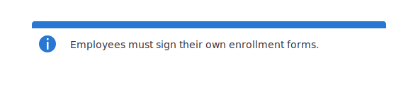
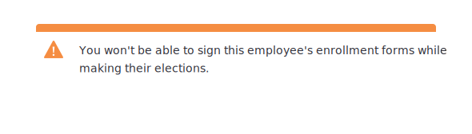
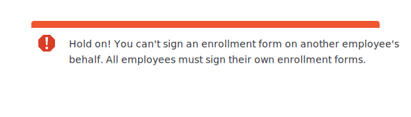
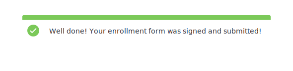
Our sizing and spacing standards are based off of the optimal length for a line of text. We use that standard to determine icon size, padding, and margins to ensure that all elements in the well are easily identifiable and readable.
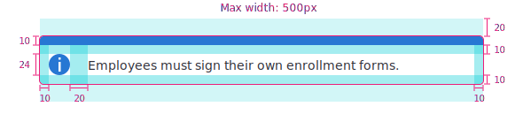 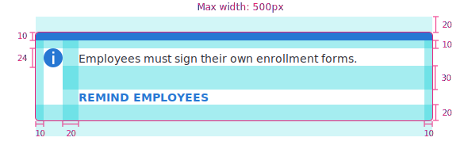 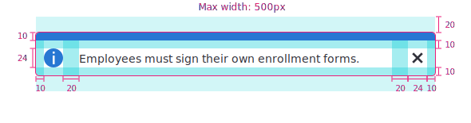
Mix and match features below to get a well suited for your message.
By default, wells appear shortly after a user takes action, so that the user doesn’t mistake a well for a static or unimportant part of the page. For example, an employer can’t sign enrollment forms on behalf of the employee when making their elections.
Our recommendation is to only use animated wells when a message is triggered by the user.
Whenever a well is present at all times, regardless of the user’s actions, opt to use a static and inanimate well. For example, a broker is viewing a past distribution and cannot make changes to the content.
Static wells are best used when the message is always present, regardless of the user’s actions.
All wells can have one action associated with the message. Actions in wells are styled in all caps and are the same color as the icon, in order to contrast the action text with the message text as well as to call some additional attention to the action.
To not confuse users, we recommend calling out one action per well.
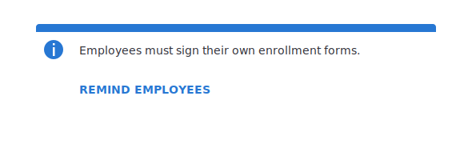
Sometimes a well doesn’t need to be present on the screen at all times after it has been triggered. A dismissible well allows the user to close it. This is typically useful for reminders, success wells, or minimal-impacting warning wells that appear frequently, but do not impede the user’s workflow.
When a well is dismissed, we recommend the application remember the user’s choice and not show the well again after a page refresh or the back button is pressed to get back to the previous page.
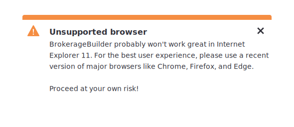
Site-wide messages or messages that appear on more than one page in a single workflow can be delivered as a banner well that spans across the entire width of the page. This is helpful for site-wide messages such as an employer is making changes on behalf of an employee or the user experience is much better in a browser that is not Internet Explorer 11.
We recommend you to make banner wells static since they appear on more than one page and push content down. This can be annoying and jarring to users.
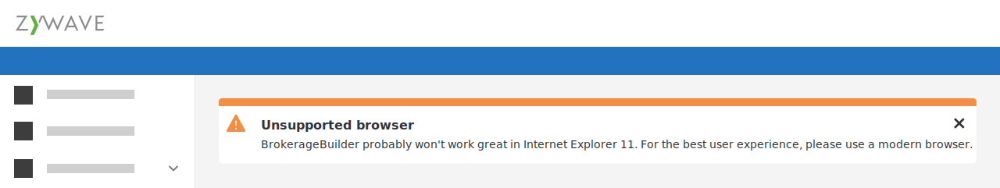
Multi-item wells, multi-paragraph wells, wells with headlines, or multiple wells all introduce questions of hierarchy. That undermines the ideal use of wells–delivering a brief, specific, unified message of moderate importance.
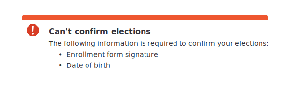
If you’re designing a well that contains the elements listed in this section, there’s a good chance that you may have chosen the wrong delivery system (link to messages) or that there are larger, more fundamental problems with on the page with either messaging or design.
If you must use these features, however, do so according to these standards.
Extends ZuiBaseElement
<zui-well type="info">
<div>
Employees must sign their own enrollment forms.
</div>
<button slot="action">Remind employees</button>
</zui-well>The type of well you want to display. Defaults to ‘info’. The types of zui-well include: ‘info’, ‘warning’, ‘error’, ‘success’
Whether or not you want to display an icon in your well
Whether or not you want your well to be dismissible
Whether or not you want your well to span the entire width of its parent container
DEPRECATED, will be removed in a future release; use “static” instead
If set, the well will not slide down and will instead just remain static on the page
type string Computes the _icon property. This determines which zui-icon this well will use.